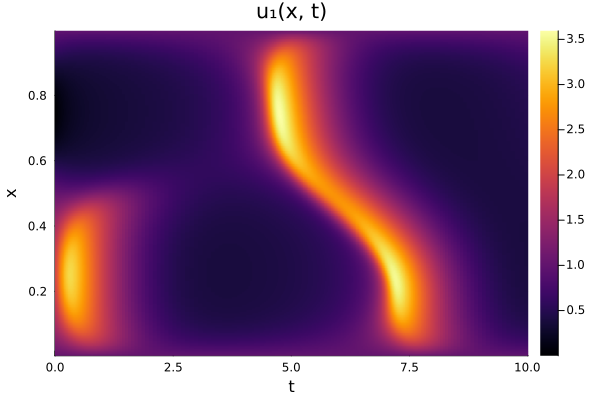

Stiff, High-Dimensional ODEs with the MatfreeEK1
The EK1 solves stiff ODEs well, but its cost per step grows cubically with the dimension of the ODE. The MatfreeEK1 linearizes the ODE with the full Jacobian, like the EK1, but it uses the Jacobian only through Jacobian-vector products (JVPs) and vector-Jacobian products (VJPs). So for a fixed number of iterations of its linear solvers, its cost per step grows linearly with the dimension Bosch (2026). In exchange, you have to provide these products. This tutorial shows how, for a semi-discretized PDE.
The 1D Brusselator
The Brusselator is a reaction-diffusion system of two species,
\[\begin{aligned} \partial_t u_1 &= \alpha \partial_x^2 u_1 + A + u_1^2 u_2 - (B + 1) u_1, \\ \partial_t u_2 &= \alpha \partial_x^2 u_2 + B u_1 - u_1^2 u_2, \end{aligned}\]
for $x \in (0, 1)$ and $t \in [0, 10]$, with $A = 1$, $B = 3$, the boundary values $u_1 = 1$ and $u_2 = 3$, and the initial values $u_1(x, 0) = 1 + \sin(2 \pi x)$ and $u_2(x, 0) = 3$. We discretize both species on $N$ interior points of a uniform grid, with second differences for $\partial_x^2$, and store the state as $y = [u_1; u_2]$, of dimension $d = 2N$. The diffusion makes the ODE stiff, and more so for finer grids.
using ProbNumDiffEq, LinearAlgebra, Random, Plotshalves(y) = (n = length(y) ÷ 2; (view(y, 1:n), view(y, n+1:2n)))second_difference(u, i, boundary) = (i > 1 ? u[i-1] : boundary) - 2u[i] + (i < length(u) ? u[i+1] : boundary)function brusselator!(dy, y, p, t) A, B, α = p u1, u2 = halves(y) du1, du2 = halves(dy) dx = 1 / (length(u1) + 1) for i in eachindex(u1) du1[i] = A + u1[i]^2 * u2[i] - (B + 1) * u1[i] + α / dx^2 * second_difference(u1, i, 1.0) du2[i] = B * u1[i] - u1[i]^2 * u2[i] + α / dx^2 * second_difference(u2, i, 3.0) end return nothingendN = 200x = range(0, 1, length=N + 2)[2:end-1]y0 = [1 .+ sin.(2π .* x); fill(3.0, N)]p = (1.0, 3.0, 0.002)tspan = (0.0, 10.0)Jacobian-vector and vector-Jacobian products
The Jacobian of brusselator! has two parts. The second differences form a symmetric matrix, and the reaction terms couple $u_1$ and $u_2$ at each grid point through a 2×2 matrix. So the VJP $J^\top w$ is computed like the JVP $J v$, with the 2×2 matrix transposed:
reaction_jacobian(u1, u2, B) = (2u1 * u2 - (B + 1), u1^2, B - 2u1 * u2, -u1^2)function brusselator_jvp!(Jv, v, y, p, t) A, B, α = p u1, u2 = halves(y) v1, v2 = halves(v) Jv1, Jv2 = halves(Jv) dx = 1 / (length(u1) + 1) for i in eachindex(u1) a, b, c, d = reaction_jacobian(u1[i], u2[i], B) Jv1[i] = a * v1[i] + b * v2[i] + α / dx^2 * second_difference(v1, i, 0.0) Jv2[i] = c * v1[i] + d * v2[i] + α / dx^2 * second_difference(v2, i, 0.0) end return nothingendfunction brusselator_vjp!(Jtw, w, y, p, t) A, B, α = p u1, u2 = halves(y) w1, w2 = halves(w) Jtw1, Jtw2 = halves(Jtw) dx = 1 / (length(u1) + 1) for i in eachindex(u1) a, b, c, d = reaction_jacobian(u1[i], u2[i], B) Jtw1[i] = a * w1[i] + c * w2[i] + α / dx^2 * second_difference(w1, i, 0.0) Jtw2[i] = b * w1[i] + d * w2[i] + α / dx^2 * second_difference(w2, i, 0.0) end return nothingendA VJP that is not the transpose of the JVP is an easy mistake to make, and it fails the test $w^\top (J v) = (J^\top w)^\top v$:
v, w = randn(2N), randn(2N)Jv, Jtw = similar(v), similar(w)brusselator_jvp!(Jv, v, y0, p, 0.0)brusselator_vjp!(Jtw, w, y0, p, 0.0)dot(w, Jv) ≈ dot(Jtw, v)trueThe solver calls the products many times per step, so they should not allocate:
(@allocated brusselator_jvp!(Jv, v, y0, p, 0.0)), (@allocated brusselator_vjp!(Jtw, w, y0, p, 0.0))(0, 0)Pass all parameters through p, as here. A function that captures a variable which is assigned more than once boxes it, and then every call allocates.
The products go into the ODEFunction:
f = ODEFunction(brusselator!; jvp=brusselator_jvp!, vjp=brusselator_vjp!)prob = ODEProblem(f, y0, tspan, p)Instead of writing the products by hand, you can compute them by automatic differentiation, for example with DifferentiationInterface.jl: the JVP in forward mode with ForwardDiff.jl, and the VJP in reverse mode with Enzyme.jl. These packages are not dependencies of ProbNumDiffEq.jl, so this code is not run here:
using DifferentiationInterfaceimport ForwardDiff, Enzymefunction products_by_ad(f!, y0, p, t0) dy = similar(y0) jvp_backend, vjp_backend = AutoForwardDiff(), AutoEnzyme() jvp_prep = prepare_pushforward( f!, dy, jvp_backend, y0, (similar(y0),), Constant(p), Constant(t0)) vjp_prep = prepare_pullback( f!, dy, vjp_backend, y0, (similar(y0),), Constant(p), Constant(t0)) jvp!(Jv, v, y, p, t) = pushforward!( f!, dy, (Jv,), jvp_prep, jvp_backend, y, (v,), Constant(p), Constant(t)) vjp!(Jtw, w, y, p, t) = pullback!( f!, dy, (Jtw,), vjp_prep, vjp_backend, y, (w,), Constant(p), Constant(t)) return jvp!, vjp!endjvp!, vjp! = products_by_ad(brusselator!, y0, p, tspan[1])f = ODEFunction(brusselator!; jvp=jvp!, vjp=vjp!)The preparation is done once, so these products do not allocate either.
Solving the ODE
sol = solve(prob, MatfreeEK1(), abstol=1e-6, reltol=1e-3, rng=Xoshiro(1))heatmap(sol.t, x, stack(sol.u)[1:N, :], xlabel="t", ylabel="x", title="u₁(x, t)")
The MatfreeEK1 estimates its covariance from random probes, so its results vary from solve to solve. To make them reproducible, pass a random number generator to solve with rng.
sol.pnstats counts the products, and the linear solves with their Krylov iterations:
sol.pnstatsProbNumDiffEq.PNStats{Float64}
Log-likelihood: NaN
Number of Jacobian-vector products: 93396
Number of vector-Jacobian products: 75945
Number of linear solves for the mean: 277
Number of their Krylov iterations: 8441
Number of linear solves for the covariance: 2216
Number of their Krylov iterations: 63300
Number of linear solves for the calibration: 277
Number of their Krylov iterations: 1711
The MatfreeEK1 does not support mass matrices, second-order ODEs, observation noise, or priors other than the IWP yet.
The diagonal of the Jacobian
The linear solves use a Jacobi preconditioner, the diagonal of the matrix they solve with, which the solver estimates from random probes, with additional products in every step. If you know the diagonal of the Jacobian, you can pass it with diagonal_jacobian, and the solver builds a cheaper preconditioner from it instead. It is a worse preconditioner when the off-diagonal entries of the Jacobian dominate, so whether it pays off depends on the problem.
function brusselator_diagonal!(out, y, p, t) A, B, α = p u1, u2 = halves(y) out1, out2 = halves(out) dx = 1 / (length(u1) + 1) for i in eachindex(u1) a, b, c, d = reaction_jacobian(u1[i], u2[i], B) out1[i] = a - 2α / dx^2 out2[i] = d - 2α / dx^2 end return nothingendMatfreeEK1(diagonal_jacobian=brusselator_diagonal!)The iterated extended Kalman filter
Iterated linearizes the ODE again at the updated mean, until the mean converges. With MatrixFreeJacobian(), the linearization of the MatfreeEK1 (see ODEFilter), this gives the iterated extended Kalman filter:
ODEFilter(linearization=Iterated(MatrixFreeJacobian()))Comparison
We compare these solvers with the DiagonalEK1, which keeps only the diagonal of the Jacobian, on the error at the final time against a reference solution. The DiagonalEK1 gets the diagonal of the Jacobian from jac with a diagonal jac_prototype.
using OrdinaryDiffEq: Rodas5Pref = solve(prob, Rodas5P(), abstol=1e-10, reltol=1e-10)diagonal_jac(J, y, p, t) = brusselator_diagonal!(J.diag, y, p, t)prob_diagonal = remake( prob, f=ODEFunction(brusselator!; jac=diagonal_jac, jac_prototype=Diagonal(zeros(2N))))solvers = [ "MatfreeEK1" => (MatfreeEK1(), prob), "MatfreeEK1, diagonal Jacobian" => (MatfreeEK1(diagonal_jacobian=brusselator_diagonal!), prob), "MatfreeEK1, iterated" => (ODEFilter(linearization=Iterated(MatrixFreeJacobian())), prob), "DiagonalEK1" => (DiagonalEK1(), prob_diagonal),]solve_with(alg, problem) = solve(problem, alg, abstol=1e-6, reltol=1e-3, rng=Xoshiro(1))for (name, (alg, problem)) in solvers solve_with(alg, remake(problem, tspan=(0.0, 0.1))) # compile runtime = @elapsed solution = solve_with(alg, problem) err = norm(solution.u[end] - ref.u[end]) / norm(ref.u[end]) println(rpad(name, 32), "steps: ", rpad(solution.stats.naccept, 8), "time: ", rpad(round(runtime, digits=2), 8), "error: ", round(err, sigdigits=2))endMatfreeEK1 steps: 277 time: 0.55 error: 2.0e-5
MatfreeEK1, diagonal Jacobian steps: 284 time: 0.5 error: 1.9e-5
MatfreeEK1, iterated steps: 303 time: 0.58 error: 1.8e-5
DiagonalEK1 steps: 9626 time: 11.37 error: 2.9e-6The DiagonalEK1 needs many more steps, because the diffusion couples neighboring grid points and its diagonal Jacobian ignores this coupling. On this problem, the diagonal Jacobian and the iteration change little for the MatfreeEK1.